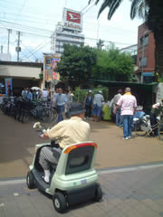
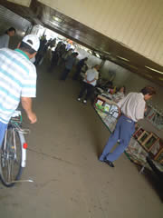
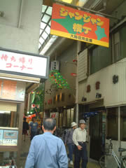
有名串カツ店は行列。行列するほど美味しいのでしょーか。行列してない串カツ屋を探しに歩きます。
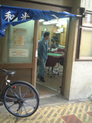
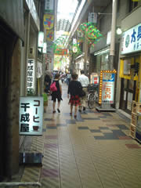
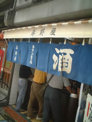
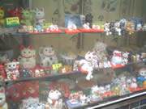
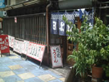
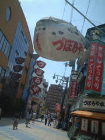
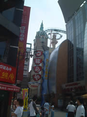
ここにいたのかぁー。台風とか来るとどーなるのかちら？
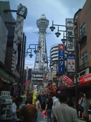
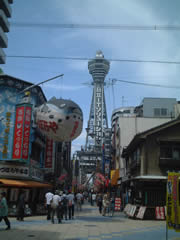
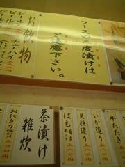
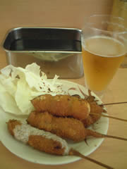
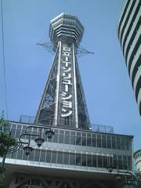
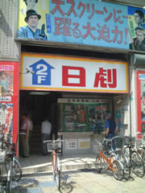
「デートに最適！」とエロ映画館前に看板。そんなデート面白すぎです。

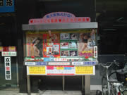
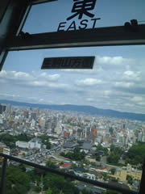
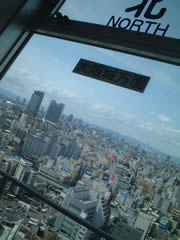
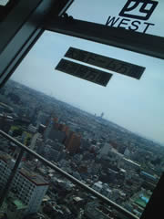
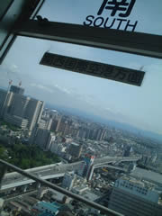
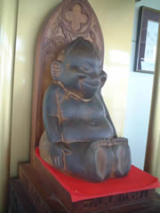
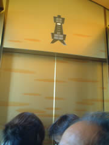
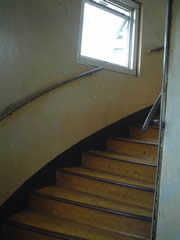
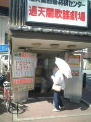
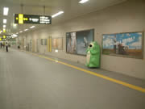
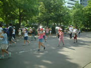
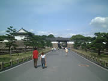
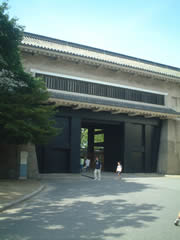
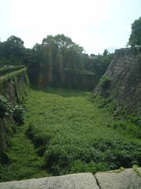
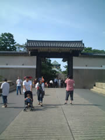
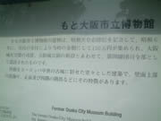
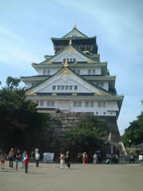
「もと」… モト冬樹を思い出しました。こんなトコで。
大阪城。
立派です。大阪城内部はリフォーム済みでお城内部とは思えない博物館風。大阪夏の陣のVTRは面白いです。細かな説明は飽きません。座り込んで聞いてたら、外国人観光客が、スクリーンを背にして写真を撮ってました。
フラッシュたいたら、スクリーンは写ってないと思うのですがね。
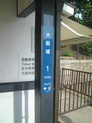
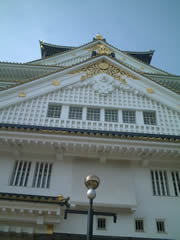
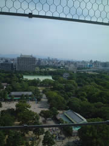
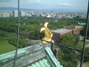
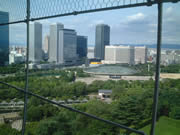
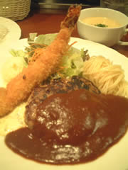
夜はホテル近くで洋食。
エビフライがおいしかった。とゆーかエビが美味しかった。ぷりぷり。
エビフライのしっぽは食べますか？私は食べます。